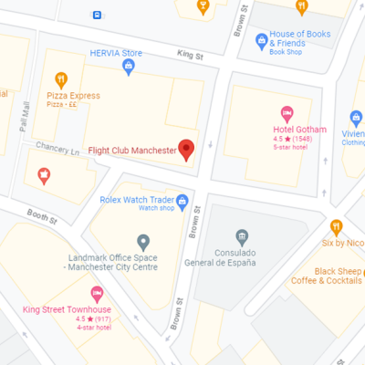
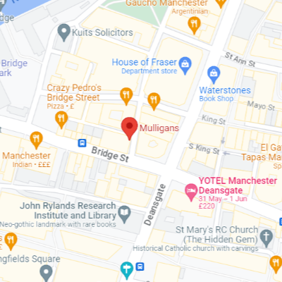
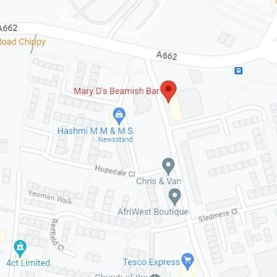

Sports Bars
Experience the electric atmosphere of Manchester's sports bars. Cheer on your favorite teams, soak in the camaraderie of passionate fans, and enjoy delicious food and drinks while witnessing sporting triumphs unfold. With Manchester being home to two of the biggest football teams, it won't take you long to find a sports bar!

Flight Club
Flight Club brings Darts into the 21st Century. With multi-player games to suit the expert or beginner, it really can be anyone’s game. Set against the backdrop of a Fairground, with the nostalgia of the classic British Pub. Perfect for get-togethers and a bit of friendly competition. Experience the joy of Social Darts!
Deal
- Happy Hours Mon-Fri 3-7pm
- 2 for £10 cocktail
- £3.50 pints of San Miguel
- £20 bottles of Fizz
CM Rating
*****
Hours
11:30am-12:30am Sun-Thurs; 11:30am-1am Fridays; 11am-1am Saturdays
Location
Ship Canal House, 98 King St, Manchester M2 4WU

Mulligans
Mulligans is a vibrant Irish bar in the heart of Manchester that offers a lively atmosphere with live music, quiz nights! If you love a pint of Guinness Mulligans Is the perfect place for you as it’s renowned for having the best pint of Guinness in Manchester. The pub shows a whole host of Live sport too!
Deal
Pint of guiness for only £4!
CM Rating
****
Hours
12:00-23:00 Mon-Wed; 12:00-1:00am Thurs-Sun
Location
12 Southgate, Manchester M3 2RB

Mary Ds Bar
Mary Ds bar describes itself as Manchester City FC number 1 pub and sports bar. It lives right next to the Etihad stadium and is the perfect place to go to enjoy a drink before matchday, but only if you support the right team…
Deal
No pint is over £5!
CM Rating
***
Hours
Mon - Fri 13:00 - 23:00. Sat - Sun 12:00 - 23:00
Location
13 Grey Mare Ln, Manchester M11 3DQ
